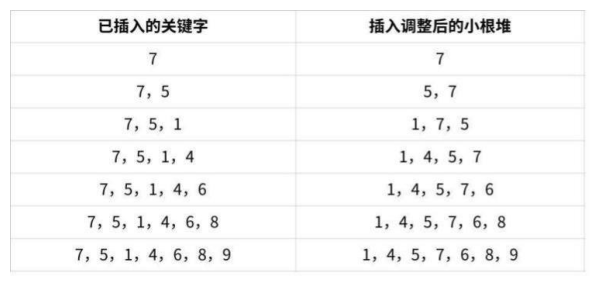

第 1 题
对n 个不同的元素进行直接插入排序，比较次数最多为（ ）次
A． n B． n-1 C． n(n+1)/2 D． n(n- 1)/2 答案与解析 答案：D
直接插入排序从第二个元素开始，前面的序列为有序序列，后面的序列为待排序序列。每次都要需要将待排序序列第一个元素，在有序序列找到他插入的位置，进行元素移动和插入。最坏的情况是每轮待插入元素的位置都是有序序列的第一个，这样比较次数为1+2+3+...+(n- 1)=n(n-1)/2。举例：{n, n-1, ...2, 1}排序成升序序列。补充：最少比较次数是(n-1)次，即每次插入的元素都在最后面。如：{1, 2, ..., n-1, n}。
教材第 48 页 第 2 题
下列关于插入排序的说法正确的是（ ）
A． 直接插入排序的平均时间复杂度是𝑂𝑛2 B． 折半插入排序的平均时间复杂度是𝑂𝑛𝑙𝑜𝑔2𝑛 C． 希尔排序是稳定的排序算法 D． 初始序列不同，折半插入排序的总比较次数一定是相同的 答案与解析 答案：A
A 正确，直接插入排序最优的时间复杂度是O(n)，最坏和平均时间复杂度是𝑂𝑛2 。 B 错误，折半插入排序相较于直接插入排序，仅仅减少了每次比较的数量级（𝑂𝑙𝑜𝑔2𝑛），平均时间复杂度是𝑂𝑛2 ，最好的情况𝑂𝑛𝑙𝑜𝑔2 𝑛。 C 错误，希尔排序不稳定。考纲内不稳定的排序算法有：简单选择排序、希尔排序、堆排序、快速排序。 D 错误，初始序列不同，折半插入排序比较的次数是有差异的，因为折半查找判定树失败结点不一定在同一层。
教材第 48 页 第 3 题
序列{20,26,40,8,6,66}只能是（ ）两趟排序后的结果
A． 简单选择排序 B． 冒泡排序 C． 直接插入排序 D． 堆排序 答案与解析 答案：C
A 错误，简单选择排序，最后两个元素一定是最大值和次大值。B 错误，同A。 C 正确。直接插入排序第二趟排序后，前面三个元素应局部有序，20，26，40 符合要求。 D 错误，两趟堆排序后，末尾两个元素一定是最大值（大根堆）或者最小值（小根堆），题目序列不符合要求。
教材第 48 页 第 4 题
用直接插入排序算法对下列4 个表进行（从小到大）排序，比较次数最少的是（ ）。
A． 94,32,40,90,80,46,21,69 B． 21,32,46,40,80,69,90,94 C． 32,40,21,46,69,94,90,80 D． 90,69,80,46,21,32,94,40 答案与解析 答案：B
越接近正序的序列，直接插入排序的比较次数就越少。选项B 和C 是比较接近正序的，然后分别判断两个序列的比较次数，以选项B 为例：第一趟，插入32，比较1 次；第二趟，插入46，比较1 次：第三趟，插入40，因为40 比46 小但比2 大，所以比较2 次；第四趟，插入80，比较1 次；第五趟，插入69，比较2 次；以此类推，共比较9 次。同理求出选项C 的比较次数为11 次。所以选择选项B。
教材第 48 页 第 5 题
设一组初始记录关键字序列为（50，40，95，20，15，70，60，45），则以增量d=4 的一趟希尔排序结束后前4 条记录关键字为（ ）
A． 40，50，20，95 B． 15，40，60，20 C． 15，20，40，45 D． 45，40，15，20 答案与解析 答案：B
增量d=4，于是序列50、40、95、20、15、70、60、45 中，50、15 是一组，40、70 是一组，95、60 是一组，20、45 是一组，经过组内排序后变为：15、40、60、20、50、 70、95、45。
教材第 48 页 第 6 题
对序列{15,9,7,8,20,-1,4}采用希尔排序，经一趟后序列变为{15,-1,4,8,20,9,7}，则该次采用的增量是（）。
A． 1 B． 4 C． 3 D． 2 答案与解析 答案：B
希尔排序将序列根据增量分成若干组，在组内进行简单插入排序。由观察可知，经过一趟后9 和-1 交换，7和4 交换，可知增量为4。
教材第 48 页 第 7 题
下列能说明希尔排序（增量d 每轮取值依次为3、1）是不稳定的算法的初始数据序列是（ ）
A． [49, 38, 65, 49, 76, 13] B． [49, 38, 49, 65, 13, 76] C． [49, 49, 13, 65, 76, 38] D． [49, 13, 65, 38, 76, 49] 答案与解析 答案：D
A选项的排序过程为：[49₁,38,65,49₂,76,13]→[49₁,38,13,49₂,76, 65]→[13, 38, 49₁, 49₂, 65, 76]，整个过程没有破坏稳定性。 B 选项的排序过程为：[49₁, 38, 49₂, 65, 13, 76]→[49₁, 13, 49₂, 65, 38, 76]→[13, 38, 49₁, 49₂, 65, 76]，同样没有破坏稳定性。 C选项的排序过程为：[49₁,49₂,13,65,76,38]→[49₁,49₂,13,65,76,38]→[13，49₁,49₂,,65,76, 38]，同样没有破坏稳定性。 D 选项的排序过程为：[49₁, 13, 65, 38, 76, 49₂]→[38, 13, 49₂, 49₁, 76, 65]→[13, 38, 49₂, 49₁, 65, 76]，破坏了稳定性。答案选D。
教材第 48 页 第 8 题
对n 个不同的元素利用冒泡法从小到大排序，在（ ）情况下元素交换的次数最多
A． 从大到小排列好的 B． 从小到大排列好的 C． 元素无序 D． 元素基本有序 答案与解析 答案：A
冒泡排序最少进行1 趟冒泡，最多进行n-1 趟冒泡。初始序列为逆序时，需进行n-1趟冒泡，并且元素交换的次数最多。初始序列为正序时，进行1 趟冒泡(无交换)就可结束算法。
教材第 48 页 第 9 题
若用冒泡排序方法对序列（12，24，36，48，60，72）从大到小排序，需要的比较次数是（ ）
A． 5 B． 10 C． 15 D． 25 答案与解析 答案：C
给出的初始待排序列为完全逆序序列，当记录个数为n 时，冒泡排序需要进行n－1趟，每一趟的比较次数分别为n－1，n－2，…，1，此题中n=6，因此总的比较次数是5+4+3+2+1=15。
教材第 49 页 第 10 题
对数据序列{4，9，10，8，5，6，20，1，2} 进行升序冒泡排序，则下列说法正确的是（ ）
A． 至少需要6 趟 B． 元素的移动次数是21 次 C． 从后往前进行冒泡排序，第三趟的结果是{1，2，4，9，10，8，5，6，20} D． 无论从前往后还是从后往前进行冒泡排序，元素的移动次数都是22 次 答案与解析 答案：A
这题没说明排序的方向是从前往后还是从后往前，如果是从前往后排序，那么至少需要８趟，反之最少需要6 趟，A 正确；由排序过程可知，元素的交换次数是22次，选项B排除；无论从前往后还是从后往前，序列的逆序数不变，交换的次数不变，都是22次，但是选项中说的是移动次数，每交换一次（swap）需要移动3 次，所以移动次数是66次，选项D 错误；从后往前进行冒泡排序，第三趟的结果是{1，2，4，5，9，10，8，6，20}，选项C 错误。
教材第 49 页 第 11 题
双向起泡排序过程可以理解为双向进行的冒泡排序，其排序过程描述如下：每一趟按照冒泡排序的方法，找到序列最大值最小值，并将其放在序列最右端/最左端。第一趟从左往右，将最大值放在序列最右端；第二趟从右往左，将最小值放在序列最左端。下一趟缩小范围重复此过程。直到可以判断序列有序为止。对数组[4,7,8,3,5,6,10,9,1,2]进行双向起泡排序，排序趟数为（ ）。
A． 7 B． 6 C． 8 D． 9 答案与解析 答案：B
第一趟排序结果为4, 7, 3, 5, 6, 8, 9, 1, 2, [10], [10]表示已经排好的序列，下同；第二趟排序结果为[1], 4, 7, 3, 5, 6, 8, 9, 2，[10]；第三趟排序结果为[1], 4, 3, 5, 6, 7, 8, 2, [9, 10]；第四趟排序结果为[1, 2], 4, 3, 5, 6, 7, 8, [9, 10]；第五趟排序结果为[1, 2], 3, 4, 5, 6, 7, [8, 9, 10]，此时已有序，但仍需要一趟无交换的排序才能判断已经有序。所以总共需要6 趟排序，答案为B。
教材第 49 页 第 12 题
下列关于快速排序的说法中，正确的是（ ） I．快速排序算法的最坏时间复杂度为𝑂𝑛𝑙𝑜𝑔2 𝑛II．快速排序的空间复杂度平均为O(1) III．快速排序算法的性能关键在于每次划分操作均分的程度IV．快速排序是一个不稳定的排序算法V．快速排序每趟排序都将大数据区间分为左右小数据区间（如果有的话），小区间之间相对有序
A． I, II, V B． III, IV, V C． II、III、IV D． I、IV、V 答案与解析 答案：B
I 错误，最坏的时间复杂度是𝑂𝑛2 。 II 错误，快速排序的空间复杂度为递归深度，最大可达𝑂𝑛。 III 正确，每趟划分越均分，比较次数就越少，性能越佳。 IV 正确，快速排序是不稳定的排序算法。不稳定的还有简单选择，堆排序，希尔排序。 V 正确，左边区间的元素比基准元素小，右边区间的元素比基准元素大，所以左右区间相对有序。区间内无序。
教材第 49 页 第 13 题
以区间第一个元素为枢轴元素，能说明快速排序（升序）是不稳定的的一组关键字序列是（ ）
A． (10，20，30，40，50) B． (50，40，30，20，10) C． (20，20，30，10，40) D． (20，40，30，30，10) 答案与解析 答案：C
C 选项(20，20，30，10，40)根据快排原理，当比对到10，则10 与第一个20 交换位置，则相对于第二个20 发生了位置变化。所以不稳定。
教材第 49 页 第 14 题
使用快速排序算法对数据进行升序排序，若经过一次划分后得到的数据序列是 {68,11,70,23,80,77,48,81,93,88}，则该次划分的枢轴是（ ）。
A． 11 B． 70 C． 80 D． 81 答案与解析 答案：D
每趟划分都会在区间中选择一个基准元素，使其左边的元素都比他小，右边的元素都比他大，应逐个观察每个元素的左右区间的元素，如果左边出现比他大的，或者右边出现比他小的，就不符合基准元素的要求，符合条件的只有81。
教材第 49 页 第 15 题
对下列关键字序列利用快速排序进行排序时，速度最快（比较次数最少）的情形是（ ）
A． 21,25,5,17,9,23,30 B． 25,23,30,17,21,5,9 C． 21,9,17,30,25,23,5 D． 5,9,17,21,23,25,30 答案与解析 答案：A
每次枢轴元素将区间划分得越均匀，排序速度越快。选择第一个元素为枢轴，那么A、C 选项的21 正好是序列的正中，所以排除B、D。A 经过一次排序后结果为9、17、5、 （21）、25、23、30.C 经过一次排序后结果为5、9、17、（21）、25、23、30.对于序列9、17、5 和5、9、17，后者在有序状态下用快速排序方法的速度没有前者快，故本题选A。
教材第 49 页 第 16 题
对下列关键字序列利用快速排序进行从小到大排序时，递归深度最小的序列是（ ）
A． [4, 2, 6, 1, 5, 3, 8, 7] B． [5, 2, 6, 1, 4, 3, 8, 7] C． [7, 1, 2, 3, 4, 5, 6, 8] D． [1, 2, 3, 4, 5, 6, 7, 8] 答案与解析 答案：B
因为C、D 选项基本有序，所以递归深度一定比较深。我们来比较A、B 选项。 A 选项每趟划分如下： [4, 2, 6, 1, 5, 3, 8, 7]→[3, 2, 1, 4, 5, 6, 8, 7]→[1, 2, 3, 4, 5, 6, 8, 7]→[1, 2, 3, 4, 5, 6, 8, 7]→[1, 2, 3, 4, 5, 6, 7, 8]→[1, 2, 3, 4, 5, 6, 7, 8]，递归深度为5。 B 选项每趟划分如下： [5, 2, 6, 1, 4, 3, 8, 7]→[3, 2, 4, 1, 5, 6, 8, 7]→[1, 2, 3, 4, 5, 6, 8, 7]→[1, 2, 3, 4, 5, 6, 7, 8]→[1, 2, 3, 4, 5, 6, 7, 8]，递归深度为4类比，B 选项的递归深度为4，本题答案选B。
教材第 49 页 第 17 题
对下列4 个序列，以第一个关键字为基准用快速排序算法进行排序，在第一趟过程中移动元素次数最多的是（）。
A． 92,96,88,42,30,35,110,100 B． 92,96,100,110,42,35,30,88 C． 100,96,92,35,30,110,88,42 D． 42,30,35,92,100,96,88,110 答案与解析 答案：B
对各序列分别执行一趟快速排序，可做如下分析(以选项A为例)：枢轴值为92，因此35 移动到第一个位置，96 移动到第六个位置，30 移动到第二个位置，再将枢轴值移动到30 所在的单元，即第五个位置，所以选项A 中序列移动的次数为4。同样，可以分析出选项B 中序列的移动次数为8，选项C 中序列的移动次数为4，选项D 中序列的移动次数为2。
教材第 49 页 第 18 题
排序过程中，对尚未确定最终位置的所有元素进行一遍处理称为一趟。下列序列中，不可能是快速排序第二趟结果的是（）。
A． 5,2,16,12,28,60,32,72 B． 2,16,5,28,12,60,32,72 C． 2,12,16,5,28,32,72,60 D． 5,2,12,28,16,32,72,60 答案与解析 答案：D
对n 个元素进行第一趟快速排序后，会确定一个基准元素，在这个基准元素的左边的元素（如果有）全部比他小，右边的元素（如果有）都比他大。A 选项中，第一轮可以选取28 或者72 作为基准元素，我们只要找一种符合的就可以，所以我们任选一种往后推进，这里我们选72。第二轮我们对72 的左区间进行第二轮排序，我们可以找到28 作为基准元素，因此选项A 可以是第二趟结果。对于B 选项，第一轮可以选取2，第二轮选取72 作为基准元素。对于C 选项，第一趟，我们可以选取2，第二轮选择28 作为基准元素。对于D 选项，第一趟可选择12 或者32，若选12，此时有左右两个区间，第二趟左区间没有符合的基准元素。若选32，右边区间没有符合的，因此答案选D。
教材第 50 页 第 19 题
下列关于简单选择排序的说法，正确的是（ ）
A． 移动的时间复杂度是𝑂𝑛2 B． 每趟会确定一个元素的最终位置 C． 比较次数最少是𝑂𝑛 D． 是稳定排序算法 答案与解析 答案：B
A 错误，每趟把未排序的元素中选择最小的元素加入已排序序列的尾部，移动的次数固定为每趟一次，n 趟n 次。B 正确，每趟确定一个元素的最终位置。C 错误，简单选择排序，每轮都要从未排序序列选择最小的元素，需要比较当前剩余未排序元素个数-1 次。比较次数固定为(n-1) + (n-2) + ... + 1 = n(n-1)/2，所以比较次数是𝑂𝑛2 ，D 错误。
教材第 50 页 第 20 题
下列初始数据序列中，不能说明简单选择排序不稳定的是（ ）
A． [4, 3, 5, 7, 6, 5, 2] B． [2, 5, 4, 6, 5, 3, 7] C． [1, 6, 3, 6, 2, 6, 7] D． [2, 1, 3, 4, 5, 5, 7] 答案与解析 答案：D
A选项，设5(A)为原序列在前的，5(B)为原序列在后的。初始：[4, 3, 5(A), 7, 6, 5(B), 2] 找最小值2 →与4交换→[2, 3, 5(A), 7, 6, 5(B), 4] 找次小3 →与3本身交换（不变）→[2, 3, 5(A), 7, 6, 5(B), 4] 找次小4 →与5(A)交换→[2, 3, 4, 7, 6, 5(B), 5(A)] 找次小5(B) →与7 交换→[2, 3, 4, 5(B), 6, 7, 5(A)] 找次小5(A) →与6交换→[2, 3, 4, 5(B), 5(A), 7, 6] 找次小6 →与7交换→[2, 3, 4, 5(B), 5(A), 6, 7] 同理B、C 也是不稳定的，D 选项两个元素5 的位置先后次序始终不变，并没有说明不稳定，答案选D。
教材第 50 页 第 21 题
有一组数据{12，15，1，18，2，35，30，11}，用简单选择排序由小到大排序，第2 趟交换数据后数据的顺序是（）
A． 11，1，2，12，35，18，30，15 B． 1，2，12，18，15，35，30，11 C． 1，2，11，12，15，18，30，35 D． 1，2，11，12，15，18，35，30 答案与解析 答案：B
第一趟选择1，将1 和12 交换位置，序列变为1，15，12，18，2，35， 30，11；第二趟选择2，将2 和15 交换位置，序列变为1，2，12，18，15，35，30，11。故B 正确， A、C、D 错误。
教材第 50 页 第 22 题
下列关键字序列为堆的是（ ）
A． 100，60，70，50，32，65 B． 60，70，65，50，32，100 C． 65，100，70，32，50，60 D． 70，65，100，32，50，60 答案与解析 答案：A
堆数据结构是一种数组对象，它可以被视为一颗完全二叉树结构。它的特点是父节点的值大于（小于）两个子节点的值（分别称为大顶堆和小顶堆）。判断方法：将序列转换成一棵完全二叉树，再看各个子树是否都满足最大堆或者最小堆的要求。
教材第 50 页 第 23 题
现有关键字序列{5,2,34,16,20,19,1}，要求对其进行降序排列，下列哪个选项是第二次调整堆之后的结果（）
A． 2,16,5,34,20,19,1 B． 19,16,5,34,20,2,1 C． 5,16,19,34,20,2,1 D． 16,19,5,34,20,2,1 答案与解析 答案：C
题目所给序列是无序的，且要进行降序排列，因此每次换到堆尾的是最小的元素，因此要先构建初始小根堆。构建完后堆为{1, 2, 5, 16, 20, 19, 34}，第一趟调整后为{2, 16, 5, 34, 20, 19, 1}，第二趟调整后为{5, 16, 19, 34, 20, 2, 1}，因此答案选C。
教材第 50 页 第 24 题
使用堆排序方法排序(45，78，57，25，41，89)，初始堆为（ ）
A． 78，45，57，25，41，89 B． 89，78，57，25，41，45 C． 89，78，25，45，41，57 D． 89，45，78，41，57，25 答案与解析 答案：B
使用堆排序时，初始堆需要一个大根堆，建堆时先画出完全二叉树，然后从(heap_size-1)/2 号元素，即57 开始从后往前调整，每次调整i 号元素时将i 号元素、i* 2+1 号元素、 i*2+2 号元素中的最大元素和i 号元素交换位置，模拟此过程最终可以得到初始堆为89，78，57，25， 41，45。
教材第 50 页 第 25 题
将关键字7,5,1,4,6,8,9 依次插入初始为空的小根堆H，得到的H 是（ ）。
A． 1,4,5,7,6,8,9 B． 1,4,7,5,6,8,9 C． 1,4,5,6,7,8,9 D． 1,5,4,6,8,9,7 答案与解析 答案：A
注意区分题目的信息，如果题目说的是将关键字进行堆排序或者构建一个小根堆，那么需要进行建堆（调整）的操作。但此题已经是一个小根堆，需要一个个插进去，每次将关键字查到堆尾，向上调整。然后下一次插入，直到所有的关键字都插入到小根堆为止。过程如下：点击图片可查看完整电子表格

教材第 50 页 第 26 题
对关键字序列{23, 17, 72, 60, 25, 8, 68, 71, 52}进行堆排序，输出两个最小关键字后的剩余堆是 （）
A． {23, 72, 60, 25, 68, 71, 52} B． {23, 25, 52, 60, 71, 72, 68} C． {71, 25, 23, 52, 60, 72, 68} D． {23, 25, 68, 52, 60, 72, 71} 答案与解析 答案：D
本题考查堆排序的执行过程。筛选法初始建堆为{8，17，23，52，25， 72，68，71，60}，输出8 后重建的堆为{17，25，23，52，60，72，68，71}，输出17后重建的堆为 {23, 25, 68, 52, 60, 72, 71}。
教材第 50 页 第 27 题
堆排序分为两个阶段，其中第一阶段将给定的序列建成一个堆，第二阶段逐次输出堆顶元素。设给定序列{48, 62, 35, 77, 55, 14, 35, 98}，若在堆排序的第一阶段将该序列建成一个堆（大根堆），那么交换元素的次数为（）
A． 5 B． 6 C． 7 D． 8 答案与解析 答案：B
首先对以第[n/2]个结点为根的子树筛选，使该子树成为堆，之后向前依次对各结点为根的子树进行选，直到选到根结点。序列(48.62.35.77.55.14.35.98}建立初始堆的过程如下所示。如图所示，(a)调整结点77，交换1次；(b)调整结点35，不交换；(c)调整结点62，交换2 次： (d)调整结点48，交换3 次。所以上述序列建初始堆，共交换元素6 次。
教材第 50 页 第 28 题
对数据序列{32,40,21,46,69,94,90,80}构建成一个大根堆后，插入元素66，则调整后，元素66在第（）层（根节点为第一层）
A． 1 B． 2 C． 3 D． 4 答案与解析 答案：C
建大根堆后，序列为{94, 80, 90, 46, 69, 21, 32, 40}。如下左图；插入66，应放在堆尾，然后向上调整，遇到比他小的，就交换。调整结束后的序列为{94, 80, 90, 66, 69, 21, 32, 40, 46}，如下右图。所以66 在第3 层。
教材第 51 页 第 29 题
对数据序列{32,40,21,46,69,94,90,80}构建成一个小根堆后，删除元素21，则调整后，堆顶元素的左右孩子为（）
A． 40，32 B． 80，40 C． 40，80 D． 40，46 答案与解析 答案：C
建成小根堆后，序列为{21, 40, 32, 46, 69, 94, 90, 80}。如下左图；删除21，将堆尾元素放到删除位置，然后向下调整，调整结束后的序列为{32, 40, 80, 46, 69, 94, 90}，如下右图。堆顶元素的两个孩子为40, 80
教材第 51 页 第 30 题
下列关于堆排序的说法，错误的是（ ）
A． 可以将堆视为一棵完全二叉树 B． 可以将堆视为一棵二叉排序树 C． 若要升 D． 堆中根节点到任意一个叶子结点的序列都是有序的序排序，最好使用大根堆 答案与解析 答案：B
堆并不是一棵二叉排序树，他满足根节点大于孩子结点即可，不需要保证左<根<右。
教材第 51 页